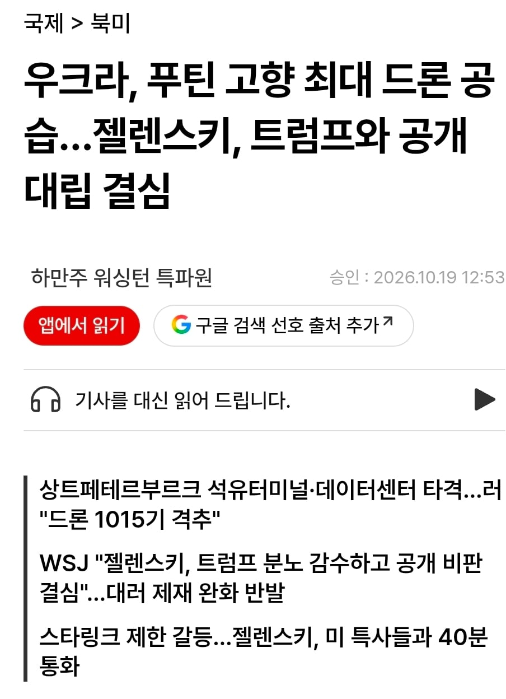
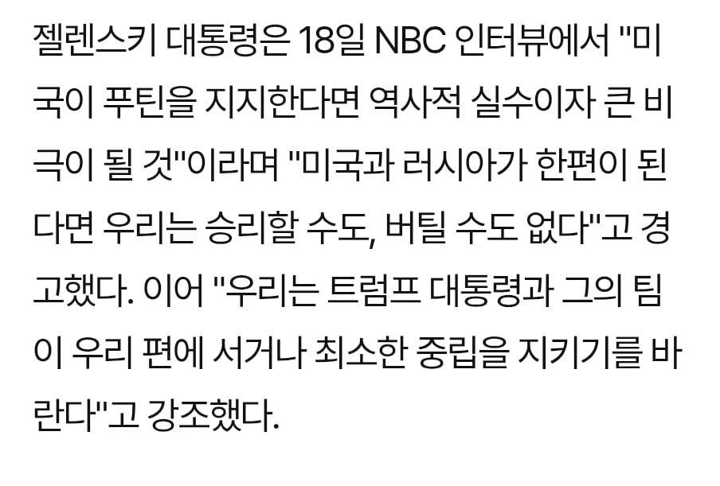
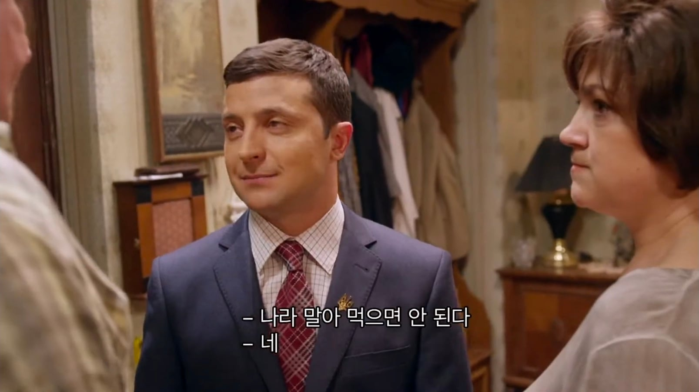
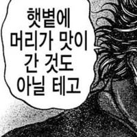
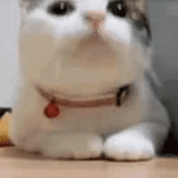

...?



...?


내 목이 날아간다고!
진짜 ㅈ같긴 할듯. 개전초부터 미국 주도로 블루팀 다 적극적으로 지지해주고 그랬는데 딱 트럼프 당선되고부터 젤렌스키 백악관에 불러와서 돌려까기 한 이후로 뭔가 티 안 나게 손절치면서 지금처럼 된거같음. 다들 미국 눈치보느라 알아서 다 기는거 같은데 당사자인 우크라이나는 미치지 않을 수가..
거기다 러시아가 요구한 휴전 조건 보면 뭐...
나라의 미래를 거세하는 수준이라...
우크라이나는 방어와 먹힌다. 둘 중 하나라서 무조건 땅을 지켜야 함
못 지키고 점령당하거나 우리알빠노 해버려도 러시아가 크림반도 들어오고 우크라이나 침공을 특수작전으로 치부한 것으로 안 끝날걸?
시간 지나면 이제 유럽으로 진출임
유럽도 이걸 알고 있고 우크라이나가 발작하면서 돈 달라고 하고 있어도 자기들이 직접 방어하고 싸우는 것보다 우크라이나 방패로 세우고 지원하는 게 제일 싸게 먹히기에 돈 주고 유럽이 미국도 돈 안 준다고 같이 패는 거
글킨 하지.. 동부지역 다 넘기면 방어가 아예안되는데 러시아가 전열 가다듬고 다시 밀고 들어오면 답이 없어서..
노머고련 당근 바라며 일방적으로 맞기 vs 계속 타격
이건 누가봐도 후자 선택하는게 맞지
트럼프 마음에안들긴함
푸틴이랑 트럼프 사귀는거 아닐까
누가 탑일까

근데 젤렌스키 외교를 진짜 더럽게 못하더라
잘 구슬리고 명분 만들면 달라고 안해도 줄텐데
들어보면 반협박 식에 설득이 아니라 그냥 돈줘무새급임 ㅇㅇ
등질거면 트럼프만 등지지.. 오만데다 총질
ㅈ같긴한데 모르겠다. 젤렌스키 입장이라면 얼마나 절박하기에 저럴까 싶기도 하고 극우나치즘 옹호하는거보면 그 극우들이 전쟁에서 기여를 많이해서 그런가 싶기더하면서 그래도 그건 안 되지 싶은데 에휴
근데 우크라이나의 극우 나치즘은 전쟁 이전에도 있었음
전쟁 이전에도 있을 정도로 그들에게는 큰문제가 아닌 이념이고(븅1신같지만 원래 저런 국가였다는거임 그냥)
근데 이번 전쟁에서 그런 극우들이 기여한게 크다고 들었음. 또한 전시에는 원래 극우들의 발언권이 더 쌔진다는걸 감안 했을 때 저런 행보가 이상하지 않다고 생각함.
특히 장기전으로 가면서 지지율도 많이 떨어진 젠렌스키 입장에서는 어느정도 전공을 세운 그 세력을 마냥 무시하기 힘들거라은 생각임
있긴한데 한줌따리이다가 전쟁거치면서 확 늘어난거지
한줌이라기엔 대규모집회도 있었고 민병대까지 있었는걸?
맞긴한데 당시 우크라이나 정당중에서 민병대 없는 세력이 거의 없다시피해서..... 14년 크림 분쟁이후 전체적으로 개판된걸 잊으면 안됨
그리고 극우세력들은 목소리만 컸었고 22년 초반엔 외국 눈치 보느랴 자기들 색채 최대한 숨겼었음
내생각엔 어차피 지원못받을거 외부를 적으로 돌려서 내부 결집시키자 마인드였겠다 싶기도 함
절박할수록 지 자존심을 굽혀야지.
젤렌스키 입장에서는 굽힐 만큼 굽힌 것일 수도 있음. 국제사회 입장에서는 아닐지라도;
또한 지지층이 그걸 원하지 않을 수 있고 네말대로 그게 맞긴한데 그런다고 무기지원이 원활 해질거라는 기대치가 없을수도
그냥 저새끼도 권력맛보더니 네타냐후된 듯. 전쟁 안 끝나기를 바라는거 같아
젤렌스키는 이상태 그대로 휴전 원하고 있는데?
항복문서 싸인 안하면 휴전 없다고 하는건 오히려 푸틴이고
항복이 휴전이랑 같이 공존가능한 단어야? 순수 궁금증임
휴전하는데 항복수준의 조건을 걸 순 있지. 그러면 사실 상 공존가능한 단어가 아닐까?
젤렌스키는 이대로 멈추면 휴전가능하단 입장이고 푸틴은 지금 이상태에 더해서 군사권도 내놔 식량도 몇프로씩 내놔 나토도 안돼 이런식으로 추가적인 요구사항 겁나 많아서 사실상 식민지화임
러시아가 점령못한 땅까지 다 내놓고
나토가입 영구적포기, 군비제한등
이게 사실상 항복하라는거지 뭐임?
말도 안되는 조건 걸고서 징징 거리는건 푸틴임
따지는게 아니고 “항복안하면 휴전없다”라고 푸틴이 얘기하는게 나도 이상해서 물어보는거야
러시아식 협상은 공존해
이 전쟁은 언제 끝이 보일까?
미국도 슬슬 손떼고 유럽도 프랑스보면 쉽지않아서 길어야 2-3년 안에 끝날듯 우크라가 지원없이 스스로 저항할 체력을 가지진 못했으니 젤렌스키가 원하는대로 끝나진 않을거라 예상해봄
전쟁의 아궁이 장작이 계속 들어가고 있음. (EU지원금, 러시아 원유/가스대금)
시발살다살다 동맹국 우방국 버려버리고 그 가치를 적국의 경유 따위로 엿바꿔 먹어놓고
저새끼하는 짓 별로라 괜찮다고 생각함??
걍 우리 입장에선 둘 다 짜증남. 근데 트럼프가 훨씬 더 짜증나긴 함.
트럼프 하나때문에 좆같지만 뭐 별 수 있나 싶음
트럼프가 너무나 강약약강인 새끼라서 저지랄하는게 더 나을수도 ㅋㅋㅋㅋㅋㅋㅋ

미국 유럽은 쓰다남은 무기랑 돈좀 쥐어줘서 주요 안보위협이던 러시아 반병신 만들고 개꿀이네 진짜; 우리는 북한 대상으로 비슷한 옵션 있었으면 그거 하지 말자고 하는 새끼 바로 빨갱이 취급이었을텐데
트럼프 못가져가게 저장고 시츄설비 다 터트리면 좋아하겠는데
지금 상태로 1년 정도 뒤에 끝나도 우크라이나는 물론이고 러시아도 개병신됨.
덕분에 유럽은 당분간 안전해지고, 가스관 고쳐서 그대로 쓰고.
곤조는 ㅈ되긴 해